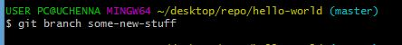
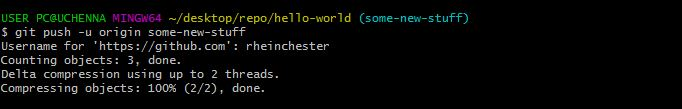
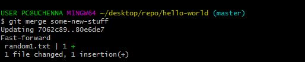

Working on a branch
Now let’s talk about branching. Branching means you diverge from the main line of development and continue to do work without messing with the main line. If you want to add, modify or debug a new feature, you create a new branch to encapsulate your changes. This makes it harder for unstable code to get merged into the main code base. You can think of them as a way to request a brand new working directory, staging area and project history. The main point of branching is that changes can be added to the two parallel “streams” without one affecting the other.
Common operations:
git branch
This lists all of the branches in the repo.
git branch -a
This lists all the branch in the local and remote repo.
git branch [branch-name]
This creates a new branch called with a branch-name. But we can’t begin to work on the branch yet.
git branch -d [branch-name]
This deletes a specified branch. With this operation git prevents you from deleting a branch with unmerged changes.
git branch -D [branch-name]
This also deletes a branch. The difference being, that git allows you to delete the branch even if changes are unmerged. (A good analogy would be the forced shut-down).
git checkout [branch-name]
This command enables us to begin working on our branch. With this command we switch to the branch from the master branch. If for instance we have a second branch (branch2), we can also switch to this branch by typing git checkout [branch2] . In summary checkout allows us to switch from one branch to another (or even to the master)
git checkout -b [branch-name]
This command creates a new branch and switches to it at the same time.
Here it combines git branch [branch-name] and git checkout [branch-name] in a single command).
git merge [branch-name]
git fetch --all
To use checkout a remote branch, we first need to fetch all the contents for that we use this command. After which we use [git checkout [remotebranch]
Demo
Open git in any repo of your choiceType in the following :

From the above we have created a branch called some-new-stuff (You can use any branch name of your choice).
Here's how we switch the branch "some-new-stuff"

Like we said above, git checkout –b [name] both creates a new branch (named some-stuff) and switches to it. By typing git branch you can see the list of all the branches we have. To switch between them use git checkout [name] command.

If we try to delete the branch [some-stuff], this produces an error because we cannot delete a branch while we are on it.

To delete [some-stuff] we switch to another branch or the master and run the command again.
 Now you see, our delete is successful.
Now you see, our delete is successful.
Pushing a branch
Open the text file random1.txt. And add any content of your choice. Once you’re done, Save the content, add your changes and commit the changes as we have done before.
Looking at the diagram below,

Normally we should enter git push origin [branch-name] to push the branch to our remote repository. But looking at the diagram we have –u in the command. I put this in because next time I want to push something into the remote repo, instead than entering
git push origin [branch-name] which is rather long I simply hit git push.
Merging a branch
Now we have pushed our branch, it’s time to merge it. 
After merging we see the branches merged with the master.

From the above merging some-new-stuff with master was successful.
If we had seen

It would have meant that no branch was merged with the master.
Pulling a branch from the repo
Say you join a colleague from work at a project, and you want to help him work on his branch, which is really giving him hell. What do we do?
First you fetch the branch

(new-stuff is the branch-name)
Then you checkout the branch

Note: If you hadn’t entered git checkout, “new-stuff” wouldn’t have appeared in your list of branches. Try [git fetch] and then [git branch] before [git checkout], you’ll understand what I’m talking about. ([git branch] shows list of local branches.)
Now you can join hands with your colleague and save the galaxy from thanos.